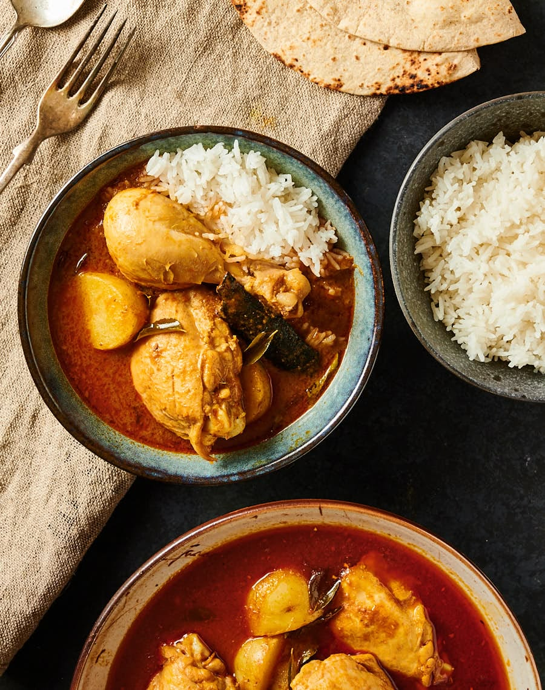

Malaysian Chicken Curry

Description
This Malaysian chicken curry is rich, fragrant, and full of warming spices, featuring tender chicken simmered in a creamy coconut curry sauce.
Packed with aromatic ingredients and bold flavour, it delivers the perfect balance of heat, savouriness, and comfort in every bite.
Best enjoyed with steamed rice or warm roti, this hearty dish is a staple in many households and makes for a deeply satisfying meal
that is both comforting and full of authentic Southeast Asian flavour.
Ingredients
- Shallots
- Garlic
- Lemongrass
- Ginger
- Red Chillies
- Malaysian Curry Powder
- Chilli Powder
- Cinnamon Stick
- Star Anise
- Curry Leaves
- Chicken Thighs and Drumsticks
- Potatoes
- Coconut Milk
Steps
- Blend the shallots, garlic, lemongrass, ginger, and chilies into a smooth paste.
- Heat oil in a deep pot over medium heat.
- Add the blended paste and stir-fry until fragrant, about 6–8 minutes.
- Add curry powder, chili powder, salt, cinnamon stick, star anise, and curry leaves.
- Cook the spices until aromatic.
- Add the chicken and stir until coated in the spice mixture.
- Pour in the water and bring to a boil.
- Add the potatoes and reduce heat to simmer.
- Cook for 25–30 minutes until the chicken is tender.
- Pour in the coconut milk and stir well.
- Simmer for another 10 minutes until the curry thickens slightly.
- Serve hot with steamed rice or roti.
Home